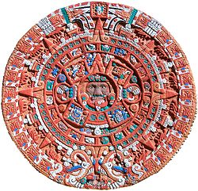
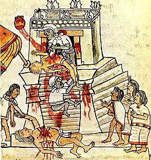

Aztek dini

AZTEK TAKVİMİ
onalpohualli denen 260 günlük dinsel yıl ile 365 günlük güneş yılını birleştiren takvim sistemi. Örnek aldığı Maya takvimi gibi, Aztek takvimi de 20'şer günlük 13 döneme bölünen dinsel yıl ile 20'şer günlük 18 aya bölünen ve ayrıca uğursuz sayılan beş günlük bir dönemi (nemontemi) içeren toplumsal yıldan oluşuyordu. Gene Maya takviminde olduğu gibi, dinsel ve toplumsal Aztek yılları her 52 yılda bir, birbirlerine göre aynı konuma gelirdi.
Aztek mitolojisi veya Aztek dini, Meksika/Aztek uygarlığı tarafından Meksika Vadisi’nde 14. ve 16. yüzyıllar arasında geliştirilmiş bir dini inanç, mitoloji ve geleneksel bütündür. Politeistik yapıya sahip bu inanış, gerek kendisinden eski gerekse kendisiyle eş zamanlı olarak aynı coğrafi bölgede ortaya çıkmış inançlar, mitler, kültürel ve kozmik imgelerden yoğun oranda etkilenmiştir. Ayrıca Aztek dini çok önemli ve sıkı bir mistik karaktere sahiptir ve liturjik açından çok gelişmiştir. Seremoniler ve ritüeller büyük bir titizlikle, belirli takvimleri çok sıkı bir şekilde takip ederek gerçekleştirilir ve dinî olduğu kadar siyasî ve toplumsal açıdan da önem arz ederdi. Ayrıca uzun yıllar boyunca kurgu eserlerinde yer almış antik ritüellerde insan kurban edilmesi anlayışı da Aztek inancında yer etmiş, ritüellerde gerçekten insan kurban edilmiştir.
Tarih ve yaratılış
- Paylaştıkları ortak dil sebebiyle Aztek kültürü genellikle Nahua olarak bilinen kültürel kompleks ile gruplandırılmıştır. Efsaneye göre, Texcoco Gölü civarındaki Anahuac vadisine, daha sonra Aztekleri oluşturacak olan çeşitli gruplar, kuzeyden gelmişlerdir. Vadinin yeri ve gölün mesafesi belirli olsa da, Azteklerin kökenine dair kesin pek bir şey bilinmemektedir.
- Kökenlerine dair farklı kaynaklar ve düşünceler mevcuttur. Efsaneye göre Meksika/Aztek halkının ataları kuzeyde Aztlán olarak anılan bir yerden gelmiş, yedi nahuatlacalardan sonuncusu güneye doğru yolculuğu yapmış ve “Azteka” ismini almıştır. Diğer kaynaklar halkın kökenini Chicomostoc’a (“yedi mağranın yeri”) veya Tamonachan’a (tüm uygarlıkların efsanevi kökeni, çıkış yeri) dayandırırlar.
- Meksika/Azteklerin tanrıları Huitzilopochtli tarafından yönlendirildiği söylenirdi. Göldeki bir adaya vardıklarına bir meyve dolu bir nopak kaktüsüne konmuş bir kartal görürler. Bu görüntü onlara tam o noktada yeni evlerini kurmalarını öğütleyen bir kehaneti tamamlamaktaydı. Böylece AzteklerTenochtitlan şehrini bu mevkiye kurmuş, bugünkü Mexico City’nin merkezinde bulunan, harika bir suni ada inşa etmiştirler.
- Efsaneye göre, Meksikalılar Texcoco civarındaki Anahuac vadisine vardıklarında, diğer tüm halkların en az uygar olanı olarak görülmekteydiler; fakat Meksika/Aztek halkı öğrenmeyi tercih etti ve diğer halklardan, özellikle de antik Toltek’ten (ki Toltec uygarlığını bir parça daha eski bir uygarlık olan Teotihuacan ile karıştırmaktaydılar), alabildikleri kadar bilgi, gelenek ve kültürel öğe aldılar. Azteklere göre Toltec halkı tüm kültürün yaratıcısı olan halktı; “Toltecayotl” kültür sözcüğüyle eş anlamlıydı.
- Aztekler birkaç farklı geleneği benimsedikleri ve kendi daha eski gelenekleriyle birleştirdikleri için, birkaç tane yaratılış efsanesine sahiptiler. Bunlardan bir tanesi bugünkü dünyadan önce yaşanmış ve hepsi felaketle sonlanmış dört çağ olduğunu belirtir. Buna göre bugün yaşadığımız çağ, Nahui-Ollin, beşinci çağ veya beşinci yaratılış yıkımdan güneşe dönüşmüş olan bir tanrının kurbanı ile kurtulmuştur. Bu efsane (mit) antik Teotihuacan şehri ile ilgilidir ki şehir Aztekler oraya vardığında zaten terk edilmiş ve yıkılmıştı. Bir başka mit dünyayı,Ometeotl’un çocukları ikiz tanrılar Tezcatlipoca ve Quetzalcoatl’ın yarattığını tarif eder. Tezcatlipoca dünyayı yaratırken ayağını kaybetmiştir ve bu sebeple bu tanrıların tüm betimlemelerinde o bir ayağı eksik ve kemiği ortaya çıkmış bir biçimde betimlenmiştir. Quetzalcoatl’a “Beyaz Tezcatlipoca” da denir.
- Yaratılış ve evren modeli Aztek panteonu için büyük bir önem taşır; tanrıların (veya ilahi varlıkların) diziliği bu evren modeline göredir. Panteondaki bu ilahi varlıklar 13 kattan oluşan gök kubbede ve 9 kattan oluşan yer altı dünyasında (ahiret alemi) farklı yerlerde ortaya çıkar.
Aztek mitolojisi, gerek arkeolojik bulgular gerekse yazılı belgelere göre, çok kalabalık bir panteona sahipti. Varlığın fark edilebilir her yüzünün ayrı bir kutsiyeti ve doğal olarak kutsal varlığı mevcuttu. Her ne kadar İspanyollar Azteklerin “teotl” olarak andıkları bu güç veya varlıkları sıklıkla “tanrı”, “aziz” veya “cin” diye çevirmiş olsa da bu tip tanımlamalar pek doğru değildir zira Aztek mitolojisinde bu terminolojinin vurguladığı çeşitli hiyerarşik veya teolojik anlamların karşılığı yoktu. “Teotl” kutsal bir güçtü ve doğa olaylarında ve formlarında örneğin bir bitki veya yağmurda ortaya çıkabileceği gibi, -çoğunlukla mistik- belirli yerlerde (yani mekânlarda) ve diğer birçok mitolojide olduğu gibi fark yaratmış bireylerde de ortaya çıkabiliyordu. Bununla birlikte Aztek mitolojisinde de temeli yaratılış efsanesine dayanan daha temel bir ‘tanrılar’ dizisine rastlamak mümkündür denilebilir. İnanılan evren modeliyle sıkı sıkıya ilişkili olan bu dizilimde, kavramların farkl temsil eden tanrılar evrenin de farklı noktalarında bulunur.
- Aztek inanışında tanrılar insanlar tarafından gözle görülemezdi. Bununla birlikte Aztekler rüyalarında ve kehanetlerde tanrıları görebilirdi. Bunun ı yönlerinidışında teixiptla olarak adlandırılan ve tanrıları temsilen kutlamalarda veya ritüellerde ortaya çıkan, tanrıları taklit eden, tanrıların içlerinde vücut bulduğu şeyler vardı – bunlar da Azteklerin tanrıları ‘görmesini’ sağlıyordu. Teixiptla, tanrıya veya olaya göre değişebilir, bir insan veya şekil verilmiş tahta veya taş oymalarda olabilirdi. Aztekler tanrılarını yoğun biçimde betimlemiştirler. Betimlemeler antromorfiktir; bir hayvan veya bir nesnenin formunu aldığında - örneğin kutsal köpek veya bıçak tanrı Itztli - dahi tanrının çeşitli insani özellikleri bulunur, kollar, bacaklar veya yüz gibi.
- Azteklerin baş tanrısı ve inandıkları en yüce tanrı Ometeotl idi. Her şeye kadir, her yerde var olan, evrenin yaratıcısı bu tanrı her şeyin ilk sebebiydi. Kendinde hem eril hem de dişil özellikler barındırmaktaydı ki onun bu tarafları birçok küçük tanrıyla birleşmiştir. Eril yön ateş ve güneş ile ilişkiliyken dişil yön bereket ve arz ile ilişkiliydi. Diğer birçok mitolojide de görülen, doğrudan eylemsiz fakat varlık açısından yüce baş tanrı kavramı, Aztek mitolojisindeki Ometeotl’da da kısmen görülebilir. Örneğin evrenin yaratılışının büyük kısmını çocukları gerçekleştirmiştir. Ometeotl Aztek panteonunda, cennetin 13. ve en yüksek katında yer alırdı. Ayrıca onun bu makamı bebeklerin ruhlarının dünyaya doğmak için indikleri yerdi.
- Aztek panteonundaki bir sonraki önemli tanrı olarak Tezcatlipoca zikredilebilir zira Azteklere göre ana yaratıcı güçtür. Baş büyücü olarak kabul edilen Tezcatlipoca birçok tanrıyla birlikte tanımlanmıştır; örneğin takvim ve bıçak tanrı Itztli ile.
- Aztek panteonundaki bir diğer yaratıcı tanrı da antik ateş tanrısı ola Xiuhtecuhtli’dir. Xiuhtecuhtli Yeni Ateş seremonisindeki yaratıcı ve yeniden doğan tanrıdır ki bu ona, gerek dinî gerek toplumsal açıdan önem katar. Her 52 yılda bir, takvimin son buluşuyla yapılan bu seremonide bir esirin kalbi kurban edilir ve esirin göğsüne yakılan ateşle Xiuhtecuhtli tekrar doğardı.
- Başka bir önemli tanrı ise, Aztek panteonunun antik tanrılarından olan, bereket vurgusunu da kavramsal olarak içeren yağmur tanrısı Tlaloc’dur. Aztek uygarlığında tarımın çok önemli olması sebebiyle, Tlaloc toprağa bereket getiren tanrı olarak çok önemliydi. Nitekim Tlaloc’un türbesi (kutsal saklama yeri, shrine) Templo Mayor’da Huitzilopochtli’ninkiyle birlikte bulunurdu. Diğer Aztek tanrılarında olduğu gibi Tlaloc da başka tanrılarla yakından ilişkilidir; bunlar rüzgâr tanrı Ehécatl, su tanrıçası Chalchiuhtlicue’dur. Ehécatl, tanrı Quetzalcoatl’ın suretlerindendir
- Aztek mitolojisinde ana tanrıçalar ve bereket tanrıçaları da bulunmaktaydı. Panteondaki en güçlü tanrıçalar teteoinnan olarak anılan ana tanrıçalardı. Cinsel güçler ve tutkularla ilgili Tlazolteotl ile aşk ve cinsel arzunun tanrıçası Xochiquetzalbunlardandır. Bunların dışında önemli bereket tanrıçalarından bazıları; Xilonen, Centeotle ve Mayahuel’dir.
Seremoni
- Aztek mitolojisi seremonileri açısından çok çarpıcıdır. Seremoniler çok sıkı bir göksel takvim baz alınarak yapılırdı ve dinî olduğu kadar sosyal öneme sahipti. Tüm seremoniler iki ritüel takvime göre yapılırdı; tonalpohualli (365 günlük takvim) ve 260 günlük bir başka takvim. Yörelere göre çeşitlilik gösteren seremoniler genelde üç devreye sahipti: hazırlık, kurban ve tanrıların beslenmesi. Hazırlık günlerinde oruç, çeşitli saflaştırma uygulamaları, şarkılar ve benzeri diğer kültürlerde de görülen dinî ve kutlamaya dayalı uygulamalar yer alırdı. Hazırlık devresini kurban devresi takip ederdi. Bu devrede kurban edilen insanlar genellikle ya esir ya kölelerdi. Seremoniden seremoniye kurban etme şekli değişiklik gösterebilirdi, nitekim Aztek seremonilerinde yakma, baş kesme gibi farklı kurban etme şekillerine rastlanır. Genellikle kurbanın kalbi çıkarılır ve tanrılara, beslenmeleri için, sunulurdu. Aztek inancında önemli bir yere sahip olan bu insan kurban etme imgesi, gerek edebi gerekse görsel kurgu eserlerinde fazlasıyla kullanılmıştır.
- Aztek mitolojisi çok sıkı ve gelişmiş bir kozmogoniye dayanmaktaydı, evrenin dengesini korumaları gerekiyordu. İnsan kurban edilmesi sık sık evrenin dengesini korumak adına, Güneş’i veya bir başka tanrıyı yenilemek veya güçlendirmek amacıyla yapılırdı. İnsan kurban edilmesi Aztek mitolojisinde seremonilerde yer almasının yanı sıra efsanelerin ve genel inancından da önemli bir noktasını oluşturmaktaydı. Beşinci çağın yaratılmasında, Güneş’i desteklemek için büyük sayılarda insan kurban edilmesinin yanı sıra, tanrılar da kendilerini kurban etmişlerdi. Bu tip efsanevi temellerle insan kurban edilmesi, zaman zaman büyük sayılarda, devam etmiştir.

insan kurban edilişini gösteren bir betimleme,Mendoza Kodeks'inden.